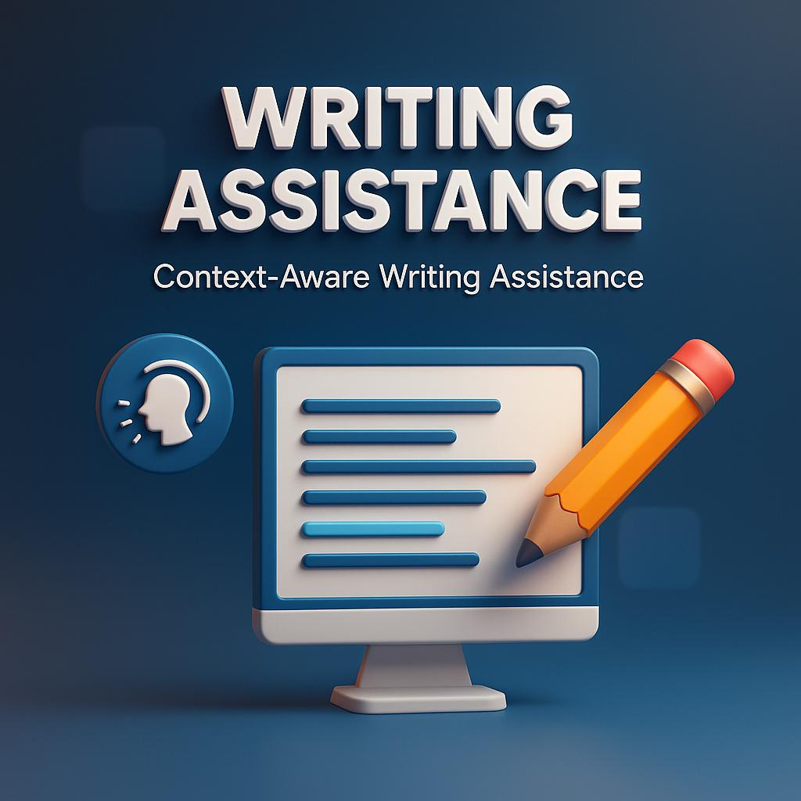
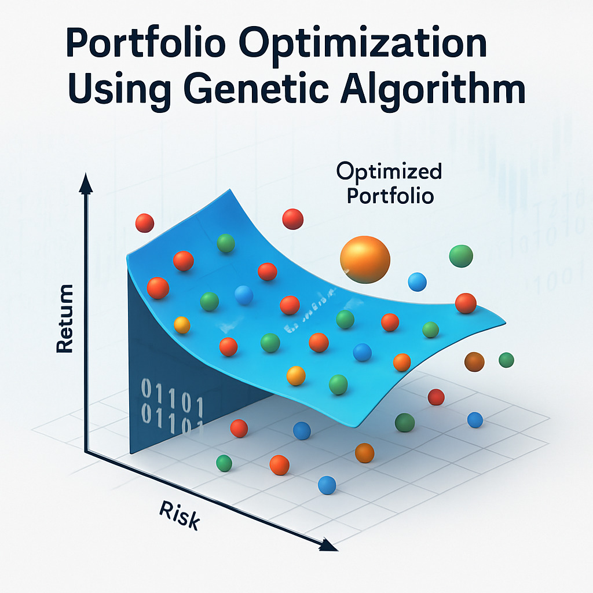

I built a Context-Aware Writing Assistant that integrates eye-tracking, knowledge graphs, and large language models (LLMs) to provide intelligent, real-time writing support. Developed with React, Tailwind, and FastAPI, the system detects user difficulty through gaze patterns and leverages LLMs with semantic context to deliver meaningful, personalized suggestions that go far beyond simple grammar correction.


Implemented portfolio optimization using Genetic Algorithms in R, optimizing asset weights for better risk-return trade-offs. Compared against random and equal-weight portfolios, the GA approach consistently achieved higher risk-adjusted performance and demonstrated strong generalization on unseen data.

I developed an end-to-end churn analytics solution using SQL, Python, and Power BI to predict and understand customer churn. The project involved cleaning and transforming raw data with SQL, performing exploratory analysis, and building machine learning models (Logistic Regression and Random Forest), where the Random Forest achieved 93% accuracy with an F1 score of 0.93. Finally, I designed an interactive Power BI dashboard showcasing KPIs (Total Customers, Churn Rate, Retention Rate) and churn insights by contract type, tenure, and payment method. This project demonstrates my ability to combine data engineering, machine learning, and business intelligence to deliver actionable insights for customer retention strategies..